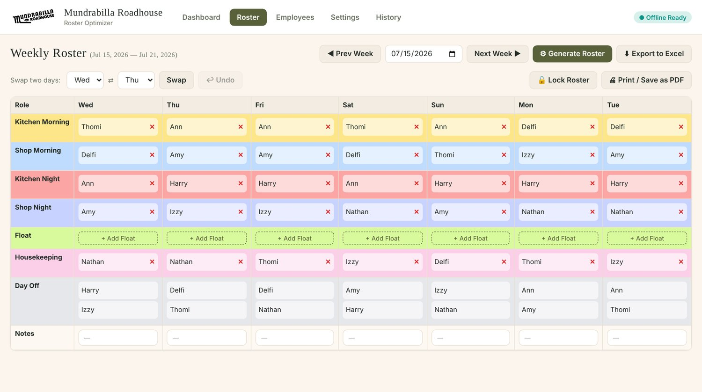

A roster tool that replaced a weekly manual job
The roadhouse rebuilt its staff roster by hand every week. I wrote the rules for a fair roster and built a tool that generates one. The manager now runs it herself.
Live app and source code. Built with Claude, July 2026.